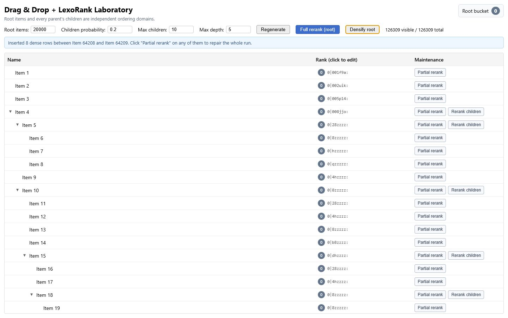

<!doctype html>
<html lang="en">
  <head>
    <meta charset="UTF-8" />
    <meta name="viewport" content="width=1080, initial-scale=1" />
    <title>LexoRank carousel renderer</title>
    <style>
      :root {
        --ink: #071522;
        --ink-2: #0d2234;
        --paper: #f7f4ec;
        --white: #ffffff;
        --muted: #a7b5c3;
        --line: rgba(255, 255, 255, 0.13);
        --bucket-0: #1ec8bb;
        --bucket-1: #ff9b52;
        --bucket-2: #8b7cf6;
        --danger: #ff6b6b;
        --success: #47d69e;
      }

      * { box-sizing: border-box; }
      html, body { width: 1080px; height: 1350px; margin: 0; overflow: auto; scrollbar-width: none; }
      html::-webkit-scrollbar, body::-webkit-scrollbar { display: none; }
      body {
        background: var(--ink);
        color: var(--white);
        font-family: Inter, "Segoe UI", Arial, sans-serif;
        text-rendering: geometricPrecision;
      }

      .slide {
        position: relative;
        width: 1080px;
        height: 1350px;
        overflow: hidden;
        background:
          radial-gradient(circle at 92% 5%, rgba(139,124,246,.16), transparent 30%),
          linear-gradient(145deg, var(--ink) 0%, #0a1b2b 100%);
        isolation: isolate;
      }

      .grid {
        position: absolute;
        inset: 0;
        z-index: -1;
        opacity: .16;
        background-image:
          linear-gradient(rgba(255,255,255,.12) 1px, transparent 1px),
          linear-gradient(90deg, rgba(255,255,255,.12) 1px, transparent 1px);
        background-size: 54px 54px;
        mask-image: linear-gradient(to bottom, transparent, #000 18%, #000 82%, transparent);
      }

      .content { position: relative; height: 100%; padding: 86px 78px 88px; }
      .kicker {
        color: var(--bucket-0);
        font-size: 23px;
        font-weight: 750;
        letter-spacing: .17em;
        text-transform: uppercase;
      }
      h1 {
        margin: 24px 0 0;
        max-width: 940px;
        font-size: 68px;
        line-height: 1.06;
        letter-spacing: -.037em;
        font-weight: 780;
      }
      .body {
        margin: 26px 0 0;
        max-width: 875px;
        color: #d4dde5;
        font-size: 31px;
        line-height: 1.42;
        letter-spacing: -.01em;
      }
      .mono { font-family: "Cascadia Mono", Consolas, monospace; }
      .accent { color: var(--bucket-0); }
      .accent-1 { color: var(--bucket-1); }
      .accent-2 { color: var(--bucket-2); }

      .footer {
        position: absolute;
        left: 78px;
        right: 78px;
        bottom: 38px;
        display: flex;
        align-items: center;
        justify-content: space-between;
        color: #a9b7c5;
        font-size: 21px;
        letter-spacing: .02em;
      }
      .footer::before {
        content: "";
        position: absolute;
        left: 0;
        right: 0;
        top: -22px;
        height: 1px;
        background: linear-gradient(90deg, var(--bucket-0), var(--bucket-1), var(--bucket-2));
        opacity: .72;
      }

      .panel {
        border: 1px solid rgba(255,255,255,.13);
        border-radius: 28px;
        background: rgba(255,255,255,.055);
        box-shadow: 0 28px 70px rgba(0,0,0,.25);
      }
      .pill {
        border: 1px solid rgba(255,255,255,.14);
        border-radius: 999px;
        background: rgba(255,255,255,.075);
      }
      .badge {
        display: inline-flex;
        align-items: center;
        gap: 10px;
        padding: 12px 18px;
        border-radius: 999px;
        font-size: 22px;
        font-weight: 700;
      }
      .badge.good { color: #b9ffe2; background: rgba(71,214,158,.15); border: 1px solid rgba(71,214,158,.42); }
      .badge.warn { color: #ffe0aa; background: rgba(255,155,82,.15); border: 1px solid rgba(255,155,82,.42); }
      .badge.danger { color: #ffc0c0; background: rgba(255,107,107,.15); border: 1px solid rgba(255,107,107,.42); }

      /* Slide 1 */
      .hero { background: #061220; }
      .hero-art { position: absolute; inset: 0; width: 100%; height: 100%; object-fit: cover; object-position: 50% 50%; opacity: .9; z-index: -2; }
      .hero-overlay { position: absolute; inset: 0; z-index: -1; background: linear-gradient(180deg, rgba(4,13,25,.95) 0%, rgba(4,13,25,.72) 38%, rgba(4,13,25,.05) 72%, rgba(4,13,25,.78) 100%); }
      .hero h1 { max-width: 870px; font-size: 77px; text-shadow: 0 8px 28px rgba(0,0,0,.42); }
      .hero .body { max-width: 780px; font-size: 30px; text-shadow: 0 4px 18px rgba(0,0,0,.6); }

      /* Slide 2 */
      .renumber-panel { position: absolute; left: 78px; right: 78px; top: 520px; bottom: 114px; padding: 34px 40px; display: grid; grid-template-columns: 280px 1fr; gap: 38px; }
      .rank-list { display: grid; align-content: center; gap: 11px; }
      .rank-row { height: 77px; display: flex; align-items: center; gap: 20px; padding: 0 22px; border-radius: 16px; background: rgba(255,255,255,.075); font-size: 28px; }
      .rank-number { width: 47px; height: 47px; display: grid; place-items: center; border-radius: 13px; background: #dbe6ee; color: #102033; font-weight: 800; }
      .rank-row.insert { outline: 2px solid var(--bucket-1); background: rgba(255,155,82,.12); }
      .shift-cascade { position: relative; display: flex; flex-direction: column; justify-content: center; gap: 23px; }
      .shift-item { display: grid; grid-template-columns: 78px 82px 78px 1fr; align-items: center; gap: 13px; font-size: 34px; }
      .shift-item .from, .shift-item .to { height: 61px; display: grid; place-items: center; border-radius: 14px; font-weight: 800; }
      .shift-item .from { background: rgba(255,255,255,.09); }
      .shift-item .to { background: rgba(255,107,107,.16); color: #ffadad; border: 1px solid rgba(255,107,107,.45); }
      .shift-arrow { color: var(--danger); font-weight: 900; }
      .shift-line { height: 2px; background: linear-gradient(90deg, var(--danger), transparent); }
      .pain-label { margin-top: 16px; color: #ffb2b2; font-size: 24px; font-weight: 720; text-transform: uppercase; letter-spacing: .12em; }

      /* Slide 3 */
      .midpoint-panel { position: absolute; left: 78px; right: 78px; top: 570px; bottom: 120px; padding: 56px 46px 42px; }
      .rank-chain { display: grid; grid-template-columns: 1fr 86px 1fr; align-items: center; gap: 18px; }
      .rank-card { padding: 28px 22px; border: 1px solid rgba(255,255,255,.18); border-radius: 19px; background: #10283d; text-align: center; font-size: 27px; }
      .rank-card.new { color: #baffdf; background: rgba(71,214,158,.15); border-color: rgba(71,214,158,.58); box-shadow: 0 0 34px rgba(71,214,158,.16); }
      .between-arrow { color: var(--bucket-0); font-size: 47px; text-align: center; }
      .one-write { display: flex; justify-content: center; margin: 30px 0 23px; }
      .gap-ghost { display: flex; align-items: center; gap: 13px; color: #8fa1b0; font-size: 23px; }
      .gap-line { flex: 1; height: 10px; border-radius: 999px; background: repeating-linear-gradient(90deg, rgba(255,155,82,.65) 0 7px, transparent 7px 14px); opacity: .75; }
      .caption { margin-top: 37px; text-align: center; font-size: 24px; color: #b9c6d1; }

      /* Slide 4 */
      .dense-visual { position: absolute; left: 78px; right: 78px; top: 500px; bottom: 118px; display: grid; grid-template-rows: 1fr auto; gap: 29px; }
      .dense-stack { padding: 30px 36px; display: grid; align-content: center; gap: 14px; }
      .dense-row { height: 69px; display: flex; align-items: center; justify-content: space-between; padding: 0 23px; border-radius: 14px; background: rgba(255,255,255,.07); font-size: 23px; }
      .dense-row code { color: #d9e7f2; font-size: 23px; }
      .dense-row.hot { border-left: 5px solid var(--bucket-1); }
      .density-meter { width: 170px; height: 10px; border-radius: 999px; background: #142d40; overflow: hidden; }
      .density-meter span { display: block; height: 100%; background: linear-gradient(90deg, var(--bucket-0), var(--bucket-1)); }
      .state-chips { display: grid; grid-template-columns: repeat(3, 1fr); gap: 15px; }
      .state-chip { min-height: 139px; padding: 19px 18px; border-radius: 19px; background: rgba(255,255,255,.06); border: 1px solid rgba(255,255,255,.12); }
      .state-chip strong { display: block; font-size: 25px; margin-bottom: 8px; }
      .state-chip span { color: #b8c5d0; font-size: 20px; line-height: 1.3; }

      /* Slide 5 */
      .repair-panel { position: absolute; left: 78px; right: 78px; top: 550px; bottom: 122px; padding: 36px 38px; }
      .repair-label { color: #9fb0bd; font-size: 20px; font-weight: 720; letter-spacing: .15em; text-transform: uppercase; }
      .number-line { position: relative; height: 155px; display: flex; align-items: center; justify-content: space-between; margin-top: 13px; }
      .number-line::before { content:""; position:absolute; left:31px; right:31px; top:76px; height:3px; background:#355069; }
      .dot { position: relative; width: 48px; height: 48px; border-radius: 50%; border: 6px solid var(--ink-2); background: var(--bucket-0); z-index:1; }
      .dot.anchor { width: 64px; height:64px; background: var(--bucket-2); box-shadow:0 0 0 3px rgba(139,124,246,.35); }
      .dot.anchor::after { content:"LOCK"; position:absolute; top:68px; left:50%; transform:translateX(-50%); color:#bdb6ff; font-size:15px; font-weight:800; letter-spacing:.1em; }
      .cluster { display:flex; gap:5px; align-items:center; z-index:1; }
      .after .cluster { gap:49px; }
      .repair-arrow { height: 48px; display:grid; place-items:center; color:var(--success); font-size:42px; }
      .repair-note { display:flex; align-items:center; justify-content:space-between; margin-top:3px; color:#c7d3dc; font-size:23px; }

      /* Slide 6 */
      .bucket-visual { position:absolute; left:78px; right:78px; top:535px; bottom:120px; display:grid; grid-template-rows:210px 1fr; gap:25px; }
      .rank-anatomy-card { padding:34px 42px; display:grid; grid-template-columns:1fr 240px; align-items:center; }
      .big-rank { font-size:48px; font-weight:760; letter-spacing:-.04em; }
      .bucket-char { display:inline-grid; place-items:center; width:70px; height:70px; border-radius:19px; color:#071522; background:var(--bucket-1); box-shadow:0 0 0 7px rgba(255,155,82,.14); }
      .bucket-callout { color:#ffd1ad; font-size:22px; line-height:1.35; }
      .bucket-callout strong { display:block; font-size:27px; color:#fff; }
      .bucket-lanes { padding:29px 32px; display:grid; grid-template-columns:repeat(3,1fr); gap:16px; align-items:stretch; }
      .lane { position:relative; border-radius:21px; padding:25px 19px; border:1px solid rgba(255,255,255,.13); background:rgba(255,255,255,.045); }
      .lane::before { content:""; position:absolute; left:0; right:0; top:0; height:8px; border-radius:21px 21px 0 0; background:var(--lane); }
      .lane h3 { margin:0 0 22px; font-size:26px; }
      .lane-row { height:43px; margin:9px 0; border-radius:10px; background:color-mix(in srgb, var(--lane) 24%, transparent); border:1px solid color-mix(in srgb, var(--lane) 48%, transparent); }
      .migration { position:absolute; left:274px; right:274px; top:125px; height:5px; background:linear-gradient(90deg,var(--bucket-0),var(--bucket-1)); z-index:2; }
      .migration::after { content:"›"; position:absolute; right:-3px; top:-30px; color:var(--bucket-1); font-size:52px; }
      .cycle { position:absolute; right:32px; bottom:25px; color:#dce5ed; font-size:21px; }

      /* Slide 7 */
      .ladder { position:absolute; left:92px; right:92px; top:520px; bottom:125px; display:grid; grid-template-rows: 1fr 54px 1fr 54px 1fr; }
      .step { display:grid; grid-template-columns:96px 1fr 164px; align-items:center; gap:23px; padding:24px 30px; border-radius:25px; border:1px solid rgba(255,255,255,.14); background:rgba(255,255,255,.055); }
      .step.primary { border-color:rgba(30,200,187,.5); background:rgba(30,200,187,.09); }
      .step-number { width:66px; height:66px; display:grid; place-items:center; border-radius:20px; background:#173149; color:#dbe8f1; font-size:32px; font-weight:850; }
      .primary .step-number { color:#07211f; background:var(--bucket-0); }
      .step-title { font-size:31px; font-weight:750; }
      .step-sub { margin-top:7px; color:#aab9c5; font-size:20px; }
      .step-cost { justify-self:end; padding:13px 16px; border-radius:999px; color:#b9ffe2; background:rgba(71,214,158,.14); font-size:22px; font-weight:800; }
      .decision { display:flex; align-items:center; justify-content:center; gap:17px; color:#aab8c4; font-size:20px; }
      .decision::before, .decision::after { content:""; width:100px; height:1px; background:#355168; }
      .diamond { width:21px; height:21px; transform:rotate(45deg); border:2px solid var(--bucket-1); }

      /* Slide 8 */
      .demo-card { position:absolute; left:66px; right:66px; top:565px; height:530px; border-radius:26px; padding:12px; background:#f6f8fa; box-shadow:0 32px 90px rgba(0,0,0,.43); transform:rotate(-1deg); overflow:hidden; }
      .demo-card img { width:100%; height:100%; object-fit:cover; object-position:top left; border-radius:18px; }
      .demo-dots { position:absolute; left:88px; top:585px; display:flex; gap:8px; z-index:2; }
      .demo-dots i { width:11px; height:11px; border-radius:50%; background:var(--danger); }
      .demo-dots i:nth-child(2){background:var(--bucket-1)} .demo-dots i:nth-child(3){background:var(--success)}
      .tool-strip { position:absolute; left:100px; right:100px; bottom:135px; display:flex; justify-content:center; gap:12px; flex-wrap:wrap; }
      .tool-strip span { padding:11px 16px; font-size:19px; color:#dce6ed; }

      /* Slide 9 */
      .cta-grid { position:absolute; left:78px; right:78px; top:540px; display:grid; grid-template-columns:1fr 1fr; gap:24px; }
      .cta-card { min-height:330px; padding:34px 31px; border-radius:28px; border:1px solid rgba(255,255,255,.15); background:rgba(255,255,255,.065); }
      .cta-card.article { box-shadow: inset 0 7px 0 var(--bucket-0); }
      .cta-card.demo { box-shadow: inset 0 7px 0 var(--bucket-2); }
      .cta-icon { width:67px; height:67px; display:grid; place-items:center; border-radius:21px; background:#153049; font-size:33px; }
      .cta-card h2 { margin:28px 0 14px; font-size:36px; }
      .cta-card p { margin:0; color:#bcc8d2; font-size:23px; line-height:1.43; }
      .links-note { position:absolute; left:78px; right:78px; top:920px; padding:20px 26px; display:flex; align-items:center; justify-content:space-between; border-radius:18px; background:rgba(255,155,82,.12); border:1px solid rgba(255,155,82,.36); color:#ffe0c7; font-size:23px; }
      .prequel { position:absolute; left:78px; right:78px; top:1004px; color:#aebdca; font-size:23px; line-height:1.45; }
      .micro-cta { position:absolute; left:78px; right:78px; top:1101px; color:#e5edf3; font-size:25px; font-weight:700; }
    </style>
  </head>
  <body>
    <main id="slide" aria-label="LexoRank carousel slide"></main>
    <script type="module">
      const footer = (n) => `
        <div class="footer"><span>Alexey Kuznetsov · frontend systems</span><span>${n}/9</span></div>`

      const chrome = (inner, n, extra = '') => `
        <section class="slide ${extra}"><div class="grid"></div><div class="content">${inner}</div>${footer(n)}</section>`

      const slides = [
        () => `
          <section class="slide hero">
            
            <div class="hero-overlay"></div>
            <div class="content">
              <div class="kicker">Deep dive · drag &amp; drop internals</div>
              <h1>Dragging a row is easy. Keeping the order is the hard part.</h1>
              <p class="body">What really happens after you drop that row — LexoRank, buckets, and rebalancing.</p>
            </div>
            ${footer(1)}
          </section>`,

        () => chrome(`
          <div class="kicker">The naïve model</div>
          <h1>Numbering rows 1, 2, 3… falls apart fast.</h1>
          <p class="body">Insert one row in the middle and you renumber everything after it. One move, hundreds of writes.</p>
          <div class="renumber-panel panel">
            <div class="rank-list">
              <div class="rank-row"><span class="rank-number">1</span><span>Task A</span></div>
              <div class="rank-row"><span class="rank-number">2</span><span>Task B</span></div>
              <div class="rank-row insert"><span class="rank-number">3</span><span>New row</span></div>
              <div class="rank-row"><span class="rank-number">4</span><span>Task C</span></div>
              <div class="rank-row"><span class="rank-number">5</span><span>Task D</span></div>
            </div>
            <div class="shift-cascade">
              <div class="shift-item"><span class="from">3</span><span class="shift-arrow">→</span><span class="to">4</span><span class="shift-line"></span></div>
              <div class="shift-item"><span class="from">4</span><span class="shift-arrow">→</span><span class="to">5</span><span class="shift-line"></span></div>
              <div class="shift-item"><span class="from">5</span><span class="shift-arrow">→</span><span class="to">6</span><span class="shift-line"></span></div>
              <div class="shift-item"><span class="from">…</span><span class="shift-arrow">→</span><span class="to">…</span><span class="shift-line"></span></div>
              <div class="pain-label">Every following row rewritten</div>
            </div>
          </div>`, 2),

        () => chrome(`
          <div class="kicker">The midpoint trick</div>
          <h1>Put a rank <em>between</em> the neighbours. Write one row.</h1>
          <p class="body">LexoRank makes ranks that always have room in the middle — until the middle gets crowded.</p>
          <div class="midpoint-panel panel">
            <div class="rank-chain mono">
              <div class="rank-card">0|a00000:</div><div class="between-arrow">→</div><div class="rank-card">0|z00000:</div>
            </div>
            <div class="one-write"><span class="badge good">✓ one new row · one write</span></div>
            <div class="rank-chain mono">
              <div class="rank-card">0|a00000:</div><div class="rank-card new">0|m00000:</div><div class="rank-card">0|z00000:</div>
            </div>
            <div class="gap-ghost"><span>…but keep inserting in the same spot</span><i class="gap-line"></i></div>
            <div class="caption mono">0|a00000: &nbsp;→&nbsp; between &nbsp;→&nbsp; 0|m00000:</div>
          </div>`, 3),

        () => chrome(`
          <div class="kicker">The maintenance signal</div>
          <h1>Keep inserting in one spot and ranks grow long.</h1>
          <p class="body">A rank isn't wrong just because it's long — it's a signal the region is running out of room.</p>
          <div class="dense-visual">
            <div class="dense-stack panel">
              <div class="dense-row"><code class="mono">0|0i0000:</code><div class="density-meter"><span style="width:28%"></span></div></div>
              <div class="dense-row hot"><code class="mono">0|0i0000:i</code><div class="density-meter"><span style="width:48%"></span></div></div>
              <div class="dense-row hot"><code class="mono">0|0i0000:i0000:i</code><div class="density-meter"><span style="width:70%"></span></div></div>
              <div class="dense-row hot"><code class="mono">0|0i0000:i0000:i0000:i</code><div class="density-meter"><span style="width:94%"></span></div></div>
            </div>
            <div class="state-chips">
              <div class="state-chip"><strong>✕ Invalid</strong><span>Doesn't parse → reject</span></div>
              <div class="state-chip"><strong class="accent-1">⚠ Duplicate</strong><span>Two rows share a rank → repair</span></div>
              <div class="state-chip"><strong class="accent">◆ Dense</strong><span>Valid but too long → repair</span></div>
            </div>
          </div>`, 4),

        () => chrome(`
          <div class="kicker">Fix #1 · partial rerank</div>
          <h1>Repair only the crowded stretch.</h1>
          <p class="body">Find the healthy rows on either side, hold them fixed, and re-spread everything between them.</p>
          <div class="repair-panel panel">
            <div class="repair-label">Before · dense cluster</div>
            <div class="number-line before"><i class="dot anchor"></i><div class="cluster"><i class="dot"></i><i class="dot"></i><i class="dot"></i><i class="dot"></i><i class="dot"></i></div><i class="dot anchor"></i></div>
            <div class="repair-arrow">↓</div>
            <div class="repair-label">After · same anchors, useful headroom</div>
            <div class="number-line after"><i class="dot anchor"></i><div class="cluster"><i class="dot"></i><i class="dot"></i><i class="dot"></i><i class="dot"></i><i class="dot"></i></div><i class="dot anchor"></i></div>
            <div class="repair-note"><span>Only the interval changes.</span><span class="badge good">rewrites <strong>k rows</strong>, not the list</span></div>
          </div>`, 5),

        () => chrome(`
          <div class="kicker">Fix #2 · full rerank</div>
          <h1>When a whole list is exhausted, move it to a fresh bucket.</h1>
          <p class="body">The <span class="mono">bucket|body</span> prefix lets you rewrite an entire ordering domain online, in small batches.</p>
          <div class="bucket-visual">
            <div class="rank-anatomy-card panel">
              <div class="big-rank mono"><span class="bucket-char">0</span>|0i0000:</div>
              <div class="bucket-callout"><strong>bucket</strong>the migration lane,<br/>not the item position</div>
            </div>
            <div class="bucket-lanes panel">
              <div class="migration"></div>
              <div class="lane" style="--lane:var(--bucket-0)"><h3>Bucket 0</h3><div class="lane-row"></div><div class="lane-row"></div><div class="lane-row"></div></div>
              <div class="lane" style="--lane:var(--bucket-1)"><h3>Bucket 1</h3><div class="lane-row"></div><div class="lane-row"></div><div class="lane-row"></div></div>
              <div class="lane" style="--lane:var(--bucket-2)"><h3>Bucket 2</h3><div class="lane-row"></div><div class="lane-row"></div><div class="lane-row"></div></div>
              <div class="cycle mono">0 → 1 → 2 → 0</div>
            </div>
          </div>`, 6),

        () => chrome(`
          <div class="kicker">The escalation policy</div>
          <h1>One ladder, cheapest step first.</h1>
          <p class="body">Each step falls through only when the cheaper operation cannot restore useful headroom.</p>
          <div class="ladder">
            <div class="step primary"><div class="step-number">1</div><div><div class="step-title">Insert a midpoint</div><div class="step-sub">Almost every operation stops here.</div></div><div class="step-cost">1 write</div></div>
            <div class="decision"><span class="diamond"></span><span>rank too long?</span></div>
            <div class="step"><div class="step-number">2</div><div><div class="step-title">Try a partial rerank</div><div class="step-sub">Expand to nearby healthy anchors.</div></div><div class="step-cost">k writes</div></div>
            <div class="decision"><span class="diamond"></span><span>window too wide?</span></div>
            <div class="step"><div class="step-number">3</div><div><div class="step-title">Full rerank that one list</div><div class="step-sub">Rare fallback, isolated to one domain.</div></div><div class="step-cost">n writes</div></div>
          </div>`, 7),

        () => chrome(`
          <div class="kicker">The executable companion</div>
          <h1>You can break it yourself.</h1>
          <p class="body">A live tree of 100K+ rows. Edit a rank, densify an interval, then watch partial and full rerank repair it — in the browser, no backend.</p>
          <div class="demo-card"></div>
          <div class="demo-dots"><i></i><i></i><i></i></div>
          <div class="tool-strip"><span class="pill">edit ranks</span><span class="pill">densify</span><span class="pill">partial rerank</span><span class="pill">full rerank</span><span class="pill mono">0→1→2→0</span></div>`, 8),

        () => chrome(`
          <div class="kicker">Continue the deep dive</div>
          <h1>Read the deep dive. Or go break the demo.</h1>
          <p class="body">From first principles to an executable 100K-row proof of concept.</p>
          <div class="cta-grid">
            <div class="cta-card article"><div class="cta-icon">▤</div><h2>Full article</h2><p>Buckets, local repair, and online rebalancing — from first principles.</p></div>
            <div class="cta-card demo"><div class="cta-icon">⌁</div><h2>Live demo</h2><p>Edit ranks, densify, and rerank a 100K-row tree.</p></div>
          </div>
          <div class="links-note"><span>⌘ Source code on GitHub</span><strong>article + demo links also in the post</strong></div>
          <div class="prequel">New here? The prequel — <em>Data-Driven Drag-and-Drop in Vue: A Virtualized 100K Row Tree.</em></div>
          <div class="micro-cta">Found this useful? Follow for more frontend-systems deep dives.</div>`, 9)
      ]

      const requested = Number(new URLSearchParams(location.search).get('slide') || '1')
      const index = Math.max(1, Math.min(slides.length, requested))
      document.getElementById('slide').innerHTML = slides[index - 1]()
    </script>
  </body>
</html>
